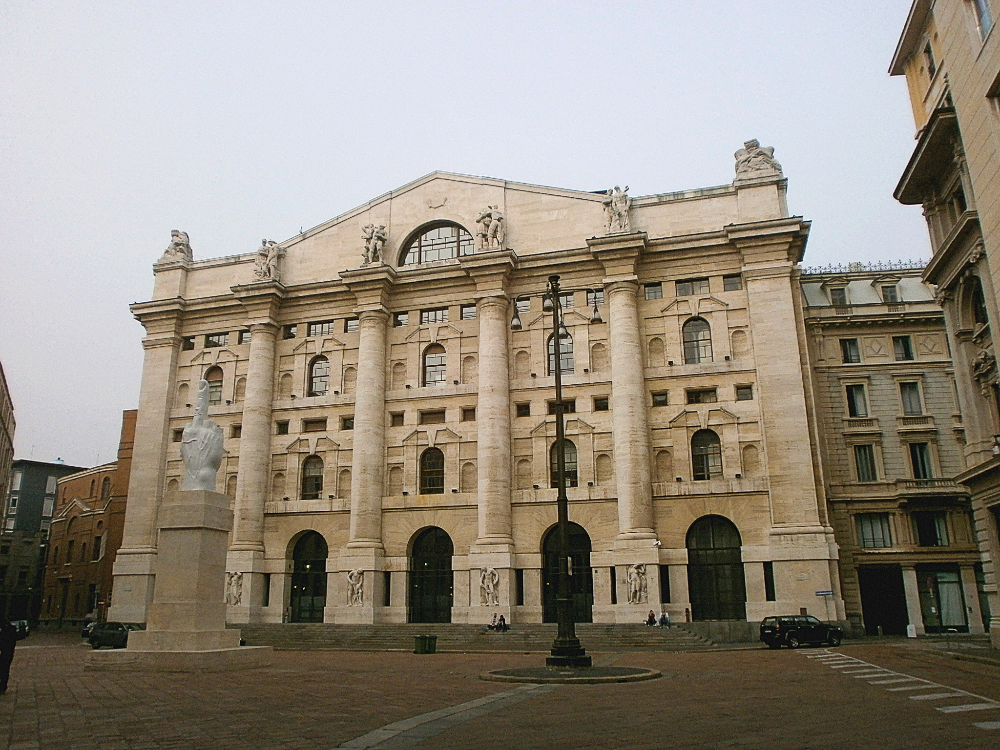

Perché conta: Per quindici anni lo spread è stato il termometro della fragilità italiana. Oggi il BTP decennale rende il 4,54% mentre il titolo di Stato francese rende il 4,72%: l'Italia si finanzia più a buon mercato della Francia. Non è un dettaglio tecnico — è il ribaltamento di una gerarchia che sembrava immutabile, e cambia il modo in cui il mercato prezza il rischio in Europa.
Terza seduta consecutiva in rialzo per la Borsa di Milano. Il FTSE MIB chiude a 51.261 punti, in crescita dello +0,87%, dopo il +0,66% di lunedì e il +0,49% di venerdì. Da venerdì 2 ottobre l'indice ha recuperato quasi 800 punti. Sul fronte del debito, lo spread BTP-Bund scende a circa 106 punti base dai 117 della vigilia, con il BTP a 10 anni al 4,54% e il Bund tedesco al 3,48%. Il paradosso della giornata è che questa forza italiana nasce dalla debolezza francese.
Il sorpasso: l'Italia si finanzia meglio della Francia
Il dato più significativo della seduta non riguarda le azioni ma le obbligazioni. Con il BTP decennale al 4,54% e l'OAT francese (Obligation Assimilable du Trésor, il titolo di Stato francese) al 4,72%, l'Italia paga oggi 18 punti base in meno della Francia per finanziarsi a dieci anni. Lo spread italiano verso il Bund è a 106 punti base, quello francese a circa 127 punti base.
È un'inversione della gerarchia che il mercato dava per scontata prima del 2024, quando la Francia era considerata un debitore semi-core, vicino alla Germania, e l'Italia il classico anello debole della periferia. A innescare il movimento è l'allarme lanciato dalla Banca di Francia, che ha parlato di un paese "strozzato dai tassi": il debito pubblico francese ha raggiunto i 3.595 miliardi di euro, pari al 119% del PIL, contro il 117,5% di soli tre mesi prima, con un deficit atteso al 5,4% quest'anno.
💡 Impara: perché lo spread di un altro paese muove il tuo
Lo spread BTP-Bund misura quanto l'Italia paga in più della Germania per indebitarsi, ma non si forma in isolamento. Gli investitori obbligazionari ragionano in termini relativi: hanno un budget di rischio da allocare fra i debiti europei e confrontano continuamente il rendimento offerto con il rischio percepito. Quando la Francia peggiora in modo visibile — debito che accelera, deficit fuori traiettoria, instabilità politica — due cose succedono. La prima è che parte del capitale in fuga dagli OAT cerca un'alternativa che renda ancora bene, e il BTP è il candidato naturale. La seconda, più sottile, è che il confronto rende l'Italia relativamente meno spaventosa: se il "semi-core" paga più della periferia, l'etichetta di periferia perde significato. Il rischio opposto è il contagio: se il mercato iniziasse a dubitare dell'intera area euro invece che della sola Francia, salirebbero i rendimenti di tutti.
| Titolo di Stato a 10 anni | Rendimento 6 ottobre | Spread verso il Bund |
|---|---|---|
| Bund (Germania) | 3,48% | — |
| BTP (Italia) | 4,54% | circa 106 pb |
| OAT (Francia) | 4,72% | circa 127 pb |
Il listino: tecnologia, pagamenti e torri in testa
In cima al FTSE MIB si è piazzata Inwit con un +3,56%, la società delle torri di telecomunicazione, seguita da Nexi a +2,9% nei pagamenti digitali e da Technoprobe a +2,8%. Bene anche Monte dei Paschi di Siena con un +2,3%.
Per Technoprobe — l'azienda di Cernusco Lombardone che produce le probe card (schede sonda) per il collaudo dei chip — la spinta è arrivata da JP Morgan, che ha avviato la copertura del titolo con un giudizio Overweight (sovrappesare, cioè detenerne più di quanto pesi nell'indice di riferimento) e un prezzo obiettivo di 45 euro, contro una quotazione in area 37 euro. È la seconda grande banca d'affari a sposare la tesi del collaudo chip come derivata dell'intelligenza artificiale, dopo il giudizio Buy di Bank of America dello scorso maggio.
Il comparto bancario ha chiuso in territorio positivo, con UniCredit in area 80,7 euro, Intesa Sanpaolo intorno a 6,51 euro e MPS a 11,56 euro. Sul titolo UniCredit ha pesato in positivo anche il via libera all'uscita dalla Russia, un dossier aperto da anni. Da segnalare la forza dei panieri a media capitalizzazione, spesso più rappresentativi dell'economia reale italiana: il FTSE Italia Mid Cap ha guadagnato il +1,68% e il FTSE Italia Star l'+1,81%, entrambi meglio dell'indice principale. In fondo al listino, Banca Ifis ha ceduto lo −0,64% a 10,93 euro.
| Indice / Titolo | Valore | Variazione 6 ottobre |
|---|---|---|
| FTSE MIB | 51.261 punti | +0,87% |
| FTSE Italia Star | — | +1,81% |
| FTSE Italia Mid Cap | — | +1,68% |
| Inwit | — | +3,56% |
| Nexi | — | +2,90% |
| Technoprobe | circa 37,00 € | +2,80% |
| Banca Ifis | 10,93 € | −0,64% |
💡 Impara: Overweight (sovrappesare)
Overweight è uno dei giudizi che le banche d'investimento assegnano a un titolo, e non significa semplicemente "comprare". Il linguaggio nasce dal confronto con un indice di riferimento, il benchmark: se Technoprobe pesa l'1% nell'indice italiano, un giudizio Overweight invita a tenerne più dell'1% in portafoglio, perché si prevede che faccia meglio della media. Gli altri due gradini sono Neutral o Equal Weight (peso uguale all'indice) e Underweight (sottopesare, tenerne meno). Il prezzo obiettivo — qui 45 euro — è il valore che l'analista si attende entro un orizzonte tipicamente di dodici mesi. Attenzione: è una previsione, non una promessa, e il giudizio dice dove l'analista vede il titolo rispetto al mercato, non che salirà in assoluto.
Il contesto europeo
Il rialzo di Milano si inserisce in una seduta positiva per tutta Europa, pur con una dinamica particolare: le Borse salgono mentre il mercato obbligazionario del paese più osservato, la Francia, resta sotto pressione. Il DAX tedesco ha guadagnato lo +0,80%, l'IBEX 35 spagnolo lo +0,70%, mentre CAC 40 francese e FTSE 100 britannico si sono fermati a +0,40% ciascuno. Milano è stata la migliore delle principali piazze continentali.
Cosa osservare nelle prossime sedute
Il primo punto è la tenuta del sorpasso sulla Francia: il voto sul bilancio francese e la capacità del governo di trovare oltre 40 miliardi di correzione senza una maggioranza solida decideranno se il differenziale resta a favore dell'Italia o se si torna alla gerarchia precedente. Il secondo è il rischio contagio: finora il mercato ha punito la Francia e premiato l'Italia, ma una crisi francese più profonda potrebbe trasformarsi in diffidenza verso tutta l'area euro, e in quel caso salirebbero anche i rendimenti dei BTP.
Sul fronte azionario, resta da verificare se la forza delle medie capitalizzazioni è l'inizio di una rotazione verso l'economia domestica o un rimbalzo tecnico. Da seguire infine il risiko bancario: con UniCredit che chiude il dossier russo e il settore in fermento, le operazioni societarie restano il tema più caldo del listino italiano.